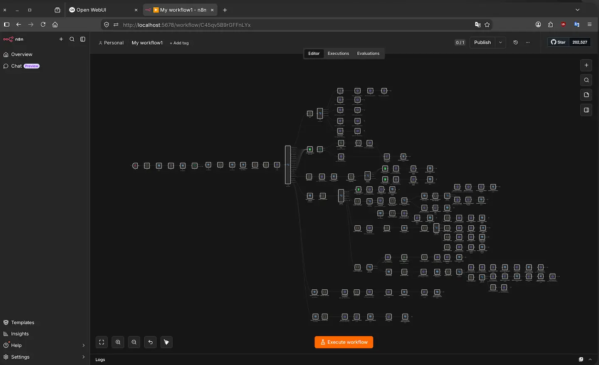
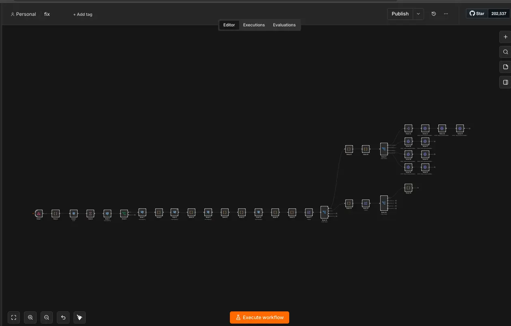
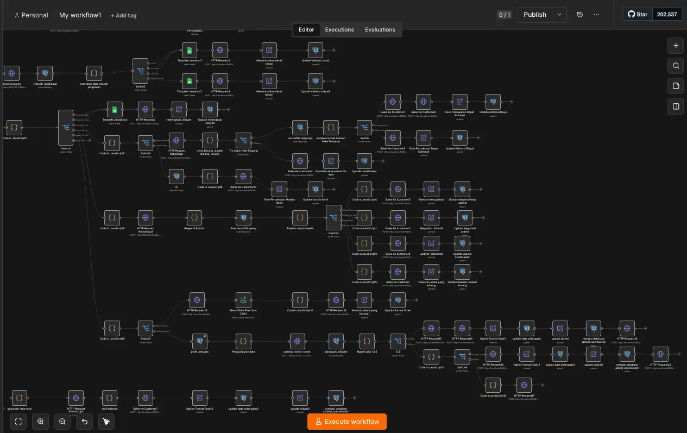

Experiment 004
StableCreating digital employees with the help of open-source LLMs.
Is it possible to set up customer service, operational admin, ads specialist, data analyst, and finance functions using only workflows and open-source LLMs, given adequate hardware and reasonable resource usage?
System Requirements
CPU
Intel Core I5 11400F
RAM
16GB DDR4 3200 MT/s
GPU
RX 6700 XT
OS
Ubuntu 26.04 LTS
The Model That Help Me
ORNITH-1.0-25B=A3B-IQ4_NL-GGUF
Inference Engine
Llama.cpp & Ollama
Frontend UI
Open Web UI & N8N
Model For Parsing
Qwen2.5-1.5B-Instruct-Q8_0-GGUF
Status
STABLE
Screenshots



Visualization
AI-First vs Deterministic-First
Perbandingan metodologi yang menentukan keberhasilan eksperimen ini.
AI-First
AI applied to every node to shorten the journey.
Deterministic-First
AI reserved only where it is truly the right fit.
AI-First
Failed- Hallucinates a lot at crucial points
- Unpredictable, complex & hard to debug
- Fails to verify whether payment was made
- Hundreds of tests failed
Deterministic-First
Stable- AI used in only 4 of 266 nodes (keyword detection)
- 0 hallucinations & 0 tasks not completed
- 100% effectiveness, easy to debug & mitigate
- System running stably, ready for upgrades
Performance Polygon
Relative scores across six quality dimensions from this experiment's evidence. Deterministic-First holds nearly a full polygon; AI-First collapses toward the center.
Scores are qualitative ratings derived from the evidence reported in this experiment: hallucinations, task completion, effectiveness, debug & mitigation ease, and system stability.
Experiment Details
Am I capable of creating a system to help me run a service business? I ask because I need to fill a number of vacant positions.
An operations administrator responsible for serving customers via WhatsApp, handling the process from the initial chat through to closing the sale.
Customer service staff responsible for handling complaints and providing solutions.
Data analysis aimed at determining what the market actually needs.
An ads specialist capable of interpreting conversion types and linking them to Meta CAPI and Google pixels
A finance system that integrates with payment gateways and can generate invoices when needed.
-
1.
Since this is a service business operating on a home-service model, it is essential to define the service coverage area; based on current operations, this is determined at the sub-district level.
-
2.
Since this is a service business with pre-set prices, I need a system capable of interpreting or normalizing customer language.
-
3.
In addition to customer language normalization, I also need a system capable of reading and interpreting images or content sent by customers, in order to identify and match them against the price list. Beyond price list issues, I also require a system that can interpret images or videos based on customer complaints.
-
4.
I also need data to conduct research for business development and the development of this system itself.
-
5.
I need a WhatsApp API that can be integrated with the system I am building.
-
6.
I need a database to store all customer data, price lists, complaint types, service areas, and schedule bookings.
-
7.
I need a system capable of reading specific customer house numbers to determine whether or not they are detected.
-
8.
I need a payment gateway that can be integrated with my system so that every payment can be verified in real-time.
My hypothesis is that I need the necessary tools, such as:
-
1.
Tools that orchestrate all my needs and my choice is n8n, because it has exactly what I require.
-
2.
An open-source API for WhatsApp that allows my n8n instance to connect via "webhook" and "HTTP request" nodes; I chose EVOLUTION API because it is an open-source API that provides exactly what I need.
-
3.
A database tool for storing all data. I chose PostgreSQL due to its compatibility with the EVOLUTION API and my familiarity with the tool.
-
4.
A small LLM model tasked with parsing "keywords," and I chose qwen2.5-1.5B-instruct-Q8_0-GGUF.
-
5.
An inference engine tool that can automatically start up when needed and I chose Ollama for its ease of use.
-
6.
A payment gateway that can integrate with my n8n setup. I cannot disclose the specific tool yet due to considerations regarding its credibility and legal implications. However, for those following this experiment, you can connect existing payment gateways using the HTTP Request node in n8n.
I set out to build this system by leveraging AI to the fullest, using a sufficiently large LLM to bridge the gap regarding technical syntax requirements and integrating AI into every possible node to keep the system streamlined and minimize the node count. However, my reasoning turned out to be completely flawed, and the hundreds of tests I conducted using this approach failed utterly.
-
1.
The AI I installed hallucinates a lot 🤣. Its AI often fails at crucial or critical points, such as cost estimation, coverage validation, and so on.
-
2.
The system has become unpredictable; it is difficult for me to determine which parts actually require mitigation, which are erroneous, and which are broken — it is simply too complex.
-
3.
The payment gateway — and this is the most crucial point — its AI consistently fails to identify whether the payment has actually been made or not.
Reflecting on the failures I've experienced, I've come to realize that the answer isn't always simply "using a more capable AI to build the system and shorten the journey." Those setbacks led me to shift my approach from "AI-first" to "deterministic-first," reserving AI only for instances where it is truly the right fit.
These are the figures I obtained after changing my approach. (You can look at the screenshot I provided above)
Hallucinate
0
Task Not Completed
0
Effectiveness
100%
The System Has Been Corrupted
Not At All
Total Workflow
3 separate workflows
Total Nodes
266 Nodes
Can Be Easily Mitigated
Absolutely Yes
Is It Easy To Debug
100% YES
The results I achieved are the product of hundreds of tests and dozens of iterations and methodological adjustments. The outcome is a system that is easy to debug and mitigate; customer inputs not detected by the system are captured in the database to inform upgrades, anomalous inputs are logged for market research, and so on.
AI is powerful, but its true value lies in using it at the right time, leveraging its strengths, and most importantly knowing how to use it effectively. Through my own experiences with failure, I've learned that AI can be a highly effective tool for running a business like the one I'm currently building without requiring massive resources, provided we understand how to use it and identify the right approaches.
This is not a simple task, nor is it something a beginner can do "easily." If you want to build something like this, start by creating a system where the AI parses keywords and generates simple reply templates — from there, you will likely feel challenged and want to take it further.
For those of you unable to read this data from technical standpoint, here is the conclusion
This experiment was not designed merely as a theoretical exercise — it is a real-world implementation that I have actively deployed.
Initially, I employed a method that relied entirely on AI, which resulted in frequent failures — the outcomes were unpredictable, difficult to mitigate, and hard to debug.
I subsequently adopted a different approach, utilizing the AI to write JavaScript code that ensures deterministic output and clear system readability, achieving 100% precision in the journey structure at every node.
I created a total of three separate workflows comprising 266 nodes; only four of these nodes utilize AI for keyword detection, while the remainder consist of standard n8n components such as JavaScript code nodes, HTTP requests, and others.
The system is currently running stably and will undergo continuous upgrades to meet evolving business needs.